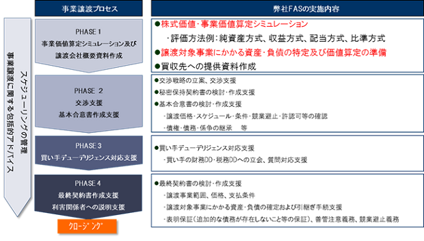

Duediligence
Duediligence
財務デューデリジェンス・株価算定
財務デューデリジェンス・株価算定
サービスの特徴
全国対応可能であること
弊社は大阪にヘッドオフィスをかまえる公認会計士・税理士を中心とする会計コンサルティングファームです。特定の金融機関や監査法人と特に利害関係があることもありません。本社の立地上、関西圏（大阪・神戸・兵庫・京都・奈良）のクライアント様が多い状況ですが、もちろん全国対応させていただいております。
スピード報告：短納期での報告書提出を目指していること
財務デューデリジェンスの報告書や価値算定書は、依頼を受けてから１か月以上経過してから報告書の提出ということが常識になっている面もあるかと思います。しかし、企業様の意思決定のスピードが上がっていることに起因するのか「すぐに報告書がほしい」、「来週から早速現地調査をしてもらえないか」といったスピードを重視した対応をお願いされる事例にあたることが増えております。
そこで、弊社では、ご要望に応じて短期間での報告書提出を実施しております。（もちろん調査対象企業の規模や調査内容によりますが、）現地調査後２０日程度で報告書の提出を目指しております。
海外対応：海外の会社の価値算定にも対応していること
弊社には、英語、中国語、韓国語、タイ語に堪能なコンサルタントがいますので、海外の会社の価値算定にも対応させていただいております。日本語での算定書提出が原則ですが、もちろん英語での提出も可能です。
サービス内容
デューデリジェンス対応
１.財務デューデリジェンス対応
弊社における財務DDは、必ず公認会計士が中心のチームを組んで複数名にて対応させていただいております。財務DDとそれを基礎とした「価値算定」はセットで依頼されることが実務的には多いパターンと思われます。
また、最近では上場会社様からの依頼では、M&A後のJ-SOX対応も見据え決算処理体制を含む社内管理体制の調査といったことも調査対象に含めることも増えております。
さらに、労務・人事面も合わせて把握しておきたいという企業様も多く、弊社でも財務DDと同時に社会保険労務士による労務DDを実施させていただくケースもあります。
-報酬金額-
財務DDの報酬金額は、企業規模（売上・純資産・利益・人員数・拠点数・グループ会社数・業界の特殊性・新株予約権や種類株の有無 等）と調査内容により、その都度、必要工数を算出し、見積算定しております。
弊社では、売上高が数億円～数百億円までの調査対象企業の財務DDを行うことが多く、概ね報酬金額も400万円～800万円程度とさせていただいていることが多いと考えます。
２.デューデリジェンス（トータルDD）対応
上記１の財務DDのみならず、グループ内の税理士法人・社会保険労務士及び提携先の司法書士・弁護士といったそれぞれの分野における専門家との連携をとり、財務DD・税務DD・法務DD・労務DDなどワンストップでのデューデリジェンスの窓口対応も可能です。
調査内容の詳細は、「DDに関するQ&A」をご参照下さい。
株価算定・価値評価対応
株価算定・企業（事業）価値評価業務
非上場株式の事業価値や株価は、使用目的、売買当事者の関係、将来事業計画の有無等状況に応じて、最適な算定方法をとる必要があります。価値算定業務を多数行っている経験をいかし、最適な評価方法により事業価値・企業価値・株式価値の評価・算定をいたします。
純粋なM&A等を見据え財務DDと合わせて非上場会社の価値算定業務を行う場合には、時価純資産法とDCF法（さらには場合によって類似会社比準法）をベースに価値算定を行うケースが多いのではないでしょうか。
なお、上場会社様からの依頼の場合、単体のみならず連結ベースでの影響も考慮する必要があるため、参考情報として、その影響に関する情報を別途お伝えすることもあります。
比率算定業務
上記１の価値算定業務の延長線上にある、合併時の合併比率算定、会社分割時の分割比率算定、株式交換時の交換比率算定の業務も行っております。
その他の評価業務
企業価値・株式価値の評価のみならず、「のれん」や「新株予約権」、「特許権」等の価値評価業務も行っております。
M&Aアドバイザリーサービス
Ｍ＆Ａに精通した公認会計士・税理士による支援体制
財務デューデリジェンスのみならず、M&Aアドバイザリーとしての経験豊かな公認会計士・税理士を中心としたコンサルタントがチームを編成し、スキーム検討から相手先からのデューデリジェンス対応、株価試算はもちろんのこと、スケジュール管理、実行時における必要書類作成支援、交渉同行支援、会計処理支援など、Ｍ＆Ａを成功へと導く全体的な支援をいたしております。
-支援事例-
具体的な流れに沿った支援事例です。
２．弊社スタッフによるM&A後の統合作業の実務支援体制
Ｍ＆Ａ後、親会社への報告体制の確立・報告資料の作成、会計処理の統一、決算早期化等、子会社となる会社で、日常業務と同時進行で行うためには、経理部門等への多大な負荷が発生し時間を要する場合があります。そこで、弊社では、コンサルティングスタッフが実務補助を行うことにより、スムーズなグループ化を支援するサポート体制の提供も行っております。社風や文化も異なるため経験上、構築には少なくとも1年はかかることを想定しておくべきと考えます